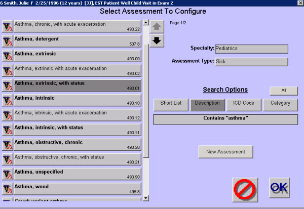

|
Description
This screen is used to select a different assessment when the provider determines that the original assessment was incorrect. Re-diagnosing an assessment has the advantage of keeping the original treatment plan intact; if the original assessment was canceled all the associated treatments would also be canceled.
The screen functions the same as the Select Assessment screen. You can select the new assessment from the short list or search for the desired assessment using the search options.
How to Access This Screen
Access this screen by:
- Selecting the description of an existing assessment from the Patient Chart, then selecting the Re-diagnose button on the menu that appears.
- Selecting the description of an existing assessment from the Patient Chart, then selecting the Re-diagnose button on the bottom of the dashboard
Screen Example

Want to Learn More?
Related Solutions
Concept: Assessments
Concept: Closing vs. Canceling
How to: Rediagnose an Assessment
How to: Search for an Assessment
|